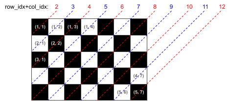
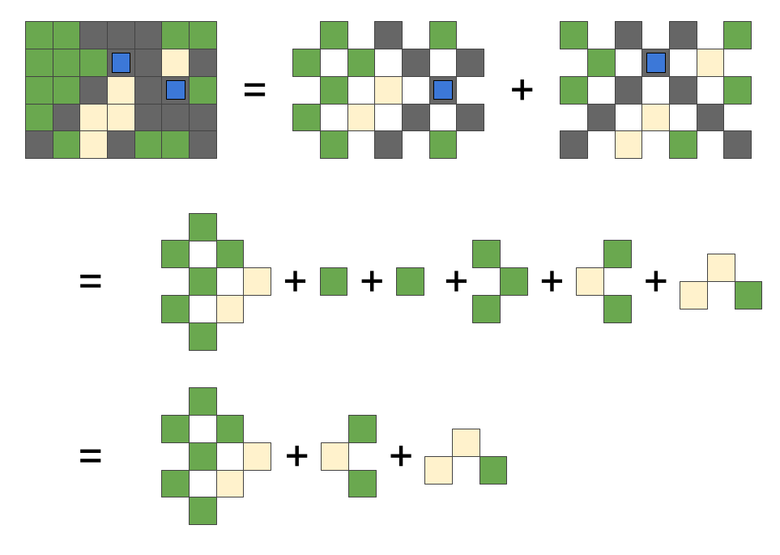
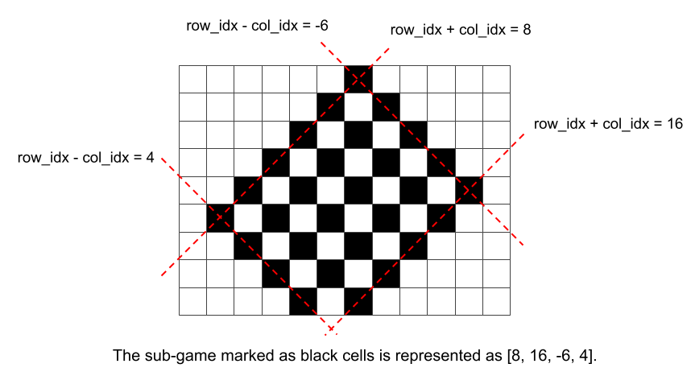
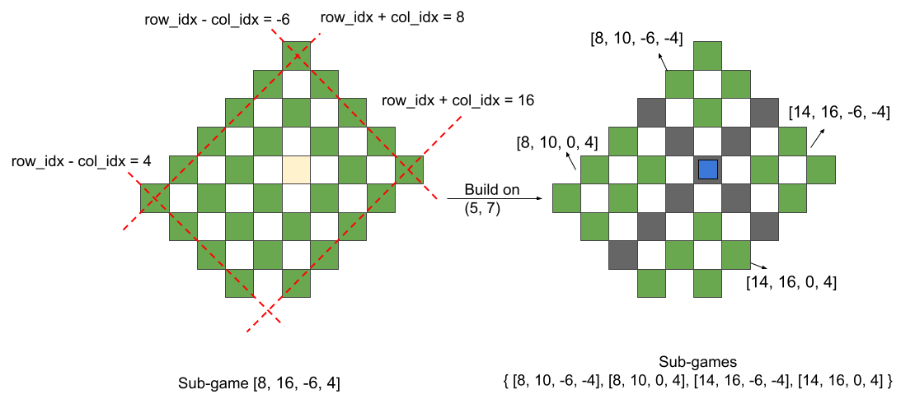
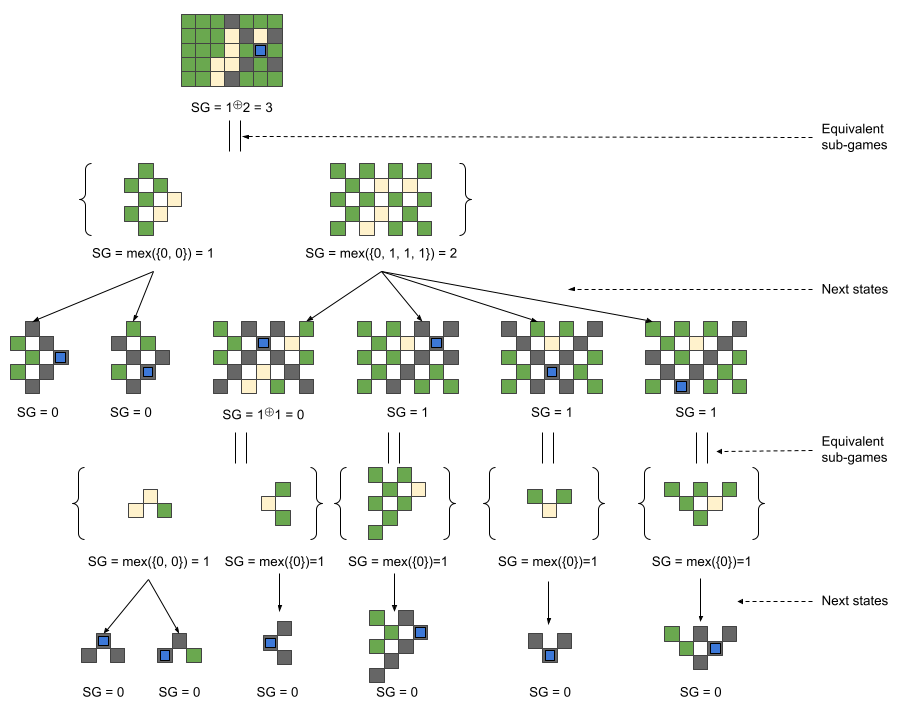

Code Jam to I/O for Women 2022 - Code Jam to I/O for Women
Analysis: Inventor Outlasting
Since the available actions of any game state don't depend on whose turn it is, we can classify each game state into two outcomes: The next player (the one whose turn it is) wins (denoted as an $$$N$$$-position), or the previous player wins (denoted as a $$$P$$$-position). For example:
With the game rules from the problem statement, to decide if a given game state $$$s$$$ is an $$$N$$$-position or a $$$P$$$-position, we have the following recursion rules:
The goal of this problem is to find out how many spots there are on the given initial game state that the player can build an attraction on it and turn the game state into a $$$P$$$-position state.
Take Sample Case #1 as example, the seven different next states and their position types are

Since only one of those states is a P-position, the answer to Case #1 is 1.
Test Set 1
For this test set, since we only have at most $$$10$$$ spots available for new attractions, we can simply use brute force search with the above recursion rules to decide whether a given game state is $$$N$$$-position or $$$P$$$-position.
The game tree size and the state-space complexity of this game both have size $$$O(S!)$$$, where $$$S$$$ represents the number of spots available to build an attraction on the initial game state. For each state, in addition to the recursion for next states, we also need $$$O(\min(\mathbf{R},\mathbf{C}))$$$ time to mark the new advertisement signs on the board. Therefore, the brute force search solution to this problem has time complexity $$$O(S! \times \min(\mathbf{R},\mathbf{C}))$$$.
In this brute force search, using dynamic programming to store every seen state won't help decrease the time complexity because the size of the dynamic programming table we will end up with is still up to $$$O(S!)$$$.
Test Set 2
Since the sign builders always extend in the diagonal direction like chess bishops, the cells on the game board can actually be seen as two independent parts: the black cells and the white cells in a chessboard shown below.

Formally, from each attraction, only cells that have the same row_idx+col_idx
parity can be affected. See the chess board above, the black cells have even
row_idx+col_idx, while the white cells have odd row_idx+col_idx.
Furthermore, since the sign builders only extend until they reach an occupied cell, the areas that were previously divided by other extending signs are also independent. And the independent areas with no available spot to build can simply be ignored.

For example, the top left is a board with $$$2$$$ attractions built on $$$(2,4)$$$ and $$$(3,6)$$$. This board is equal to $$$6$$$ independent "sub-games" shown above. And from observation, we can see only $$$3$$$ of them have available spots, and each of them will be completely occupied in one move. Therefore, there are exactly $$$3$$$ moves remaining to finish the game no matter how the players play. So we can easily figure out that this example is an $$$N$$$-position (the next player wins).
To formalize the calculation steps we demonstrated, we need the Sprague-Grundy theorem. According to the Sprague-Grundy theorem, if we have an impartial game in which the players take turns to play exactly one move and the player who cannot move loses, we can assign each game state a value (called the $$$SG$$$-value). Each game-state's $$$SG$$$-value only depends on the $$$SG$$$-value of the game-states we can reach with exactly one move.
Specifically, for any game state $$$s$$$, we have:
If a state $$$s$$$ is split into several independent sub-games $$$\{q_1, q_2, \dots, q_k\}$$$, the $$$SG$$$-value of $$$s$$$ can be calculated as $$$$SG(s)=SG(\{q_1, q_2, \dots, q_k\})=SG(q_1) \oplus SG(q_2) \oplus \cdots \oplus SG(q_k),$$$$ where $$$\oplus$$$ is the binary xor function.
Finally, if $$$SG(s)=0$$$, then $$$s$$$ is a $$$P$$$-position; otherwise $$$s$$$ is an $$$N$$$-position. So the goal of this problem is to find out how many spots on the given initial game state the player can build an attraction on and turn the game state into $$$SG$$$-value = 0.
The recursive function to calculate the $$$SG$$$-value of a given sub-game can be implemented as:

-
a sub-game can be represented by a tuple
[row_idx_plus_col_idx_begin, row_idx_plus_col_idx_end, row_idx_minus_col_idx_begin, row_idx_minus_col_idx_end], like the example shown above, - for each available spots in this range, put an attraction on it and calculate the new $$$SG$$$-value. Then the $$$SG$$$-value of this sub-game is calculated by applying $$$\text{mex}$$$ to them. And

-
when an attraction is put on a spot
[row_idx, col_idx], the current sub-game[row_idx_plus_col_idx_begin, row_idx_plus_col_idx_end, row_idx_minus_col_idx_begin, row_idx_minus_col_idx_end]is divided into four new sub-games[row_idx_plus_col_idx_begin, row_idx + col_idx - 2 , row_idx_minus_col_idx_begin, row_idx - col_idx - 2 ],[row_idx_plus_col_idx_begin, row_idx + col_idx - 2 , row_idx - col_idx + 2 , row_idx_minus_col_idx_end],[row_idx + col_idx + 2 , row_idx_plus_col_idx_end, row_idx_minus_col_idx_begin, row_idx - col_idx - 2 ],[row_idx + col_idx + 2 , row_idx_plus_col_idx_end, row_idx - col_idx + 2 , row_idx_minus_col_idx_end],
Now we know how to use the Sprague-Grundy theorem. Take Sample Case #1 as an example, what will happen if Izabella puts her attraction at third row and sixth column?

We can see that putting the first attraction on this cell will give an $$$SG$$$-value of 3. This means that Olga will having a winning move from this position, which is not good for Izabella!
Note that we can use dynamic programming to store the $$$SG$$$-value of each seen sub-game. In this way, the state-space complexity of this search is $$$O(\mathbf{R}^2 \times \mathbf{C}^2)$$$. And when calculating the $$$SG$$$-value of each sub-game, we need to visit all $$$O(S)$$$ available spots in it to enumerate the next states. When adding an attraction, we don't need to actually mark those $$$O(\min(\mathbf{R},\mathbf{C}))$$$ advertisement signs, we only need to use constant time to split the sub-games and calculate XOR from their results. Therefore, the total time complexity of this solution is $$$O(S \times \mathbf{R}^2 \times \mathbf{C}^2)$$$. And since $$$S$$$ is $$$O(\mathbf{R}\times\mathbf{C})$$$, the time complexity can also be written as $$$O(\mathbf{R}^3\times \mathbf{C}^3)$$$.